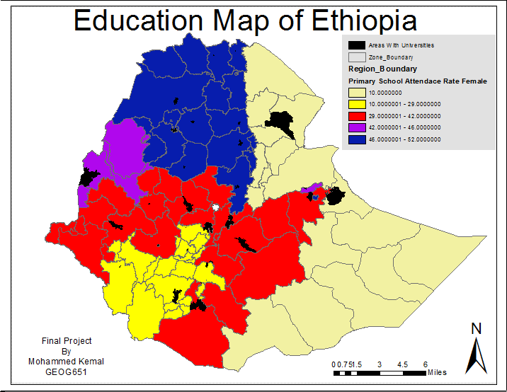
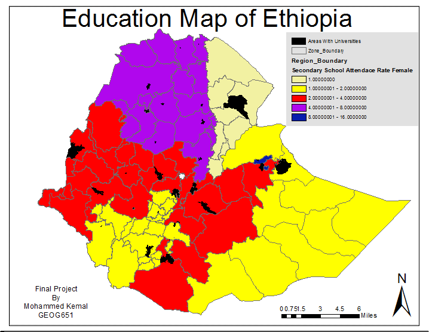
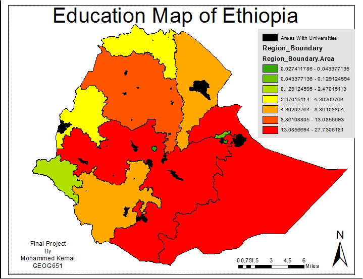

Portfolio
The purpose of this project is to show the importance of road accessibility and its impact on education. In the United States, access to roads is not a crippling factor in receiving an education. This is not the case for many of the countries in the developing world. The project will assess road accessibility in surrounding schools in Ethiopia.
 Map 1: This map represents the rate of female students attending primary schools. The map is divided by region and represented with respected color according to rate in percentage. Map 2: This map represents the rate of female students attending secondary schools. The map is divided by region and represented with respected color according to rate in percentage.
Map 3: This map represents the different regions and their areas are calculated in sq meters. It is represented using graduated colors from the color green (low) to red (high)